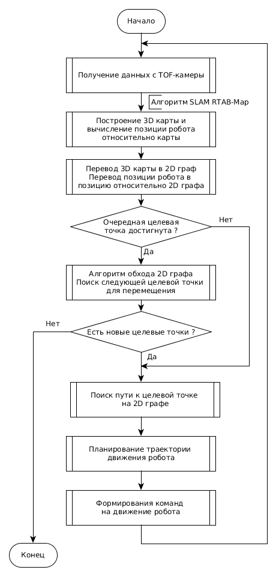
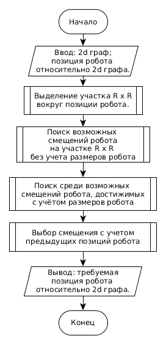
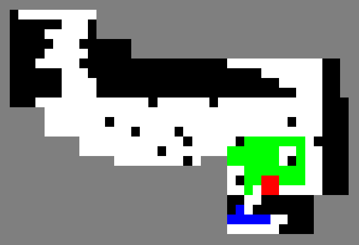
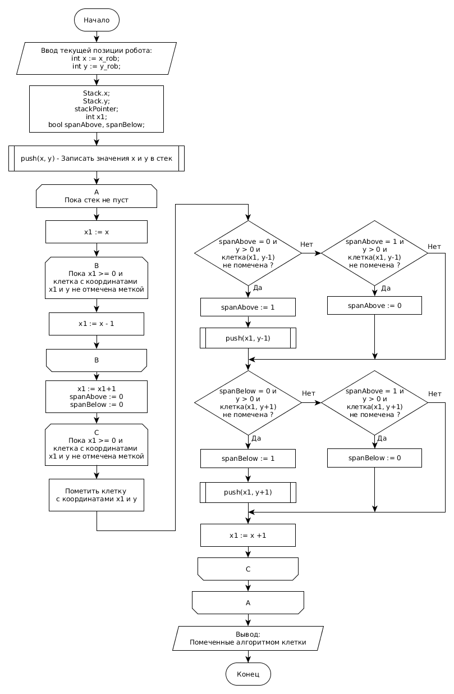
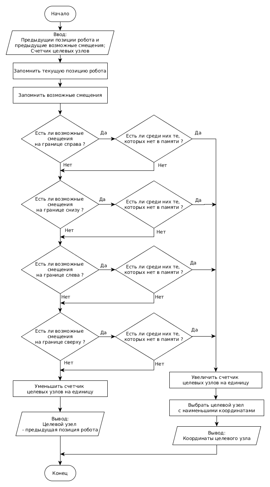
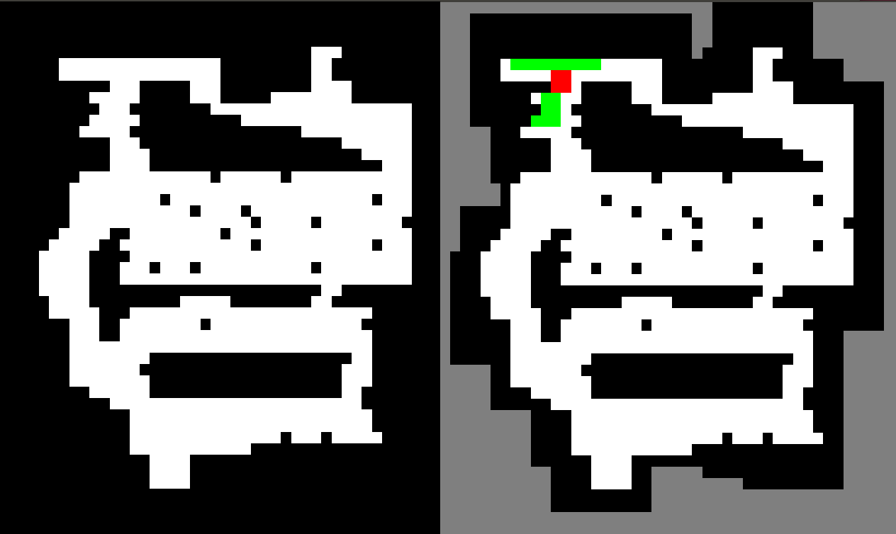

В данном разделе работы рассмотрены алгоритмы разработанные для решения задачи навигации мобильного робота в неизвестной статической среде при автономном картографировании.
Сформулируем задачу навигации мобильного робота следующим образом.
Пусть неизвестная среда представляет собой помещение с плоским полом с неизвестным расположением стен. Внутри помещения находятся статичные препятствия, количество и положение которых неизвестны.
Пусть мобильный робот, оснащенный времепролетной камерой, расположен в помещении в исходной точке и не имеет в памяти данных об окружающей среде. С исходной точкой связана система координат. Положение мобильного робота в этой же системе координат определяется путем решения задачи SLAM.
Необходимо одновременно:
- строить 3D карту неизвестного помещения, в виде облака точек, и 2D карту помещения, в виде сетчатой карты занятости;
- определять положение робота на карте;
- планировать маршрут обхода помещения для картографирования;
- передвигать мобильный робот вдоль запланированного маршрута, избегая столкновения с препятствиями.
При решении задачи были приняты следующие допущения:
- в неизвестной среде находятся только статические препятствия, подвижных препятствий нет;
- мобильный робот можно описать габаритной окружностью;
- приводной уровень системы управления мобильного робота отрабатывает заданные линейную и угловую скорости его движения без ошибок, при передвижении колеса робота не проскальзывают.
Данная задача является комплексной, поэтому в работе она разбита на подзадачи. Для осуществления навигации робота было предложено реализовать следующую последовательность действий, приведенных на рисунке 12.
Следует рассмотреть подробнее назначение каждого элемента предложенной схемы действий.
Находясь в исходной точке, а также при достижении очередной целевой точки робот картографирует неизвестную территорию непосредственно вокруг себя, путем выполнения разворота на месте на угол 360º.
Данные с времепролетной камеры поступают на вход алгоритма SLAM. На основании результатов проведенного обзора (см. раздел 1), для использования в схеме действий была выбрана реализация SLAM алгоритма RTAB-Map. RTAB-Map выполняет обработку данных с камеры, формирует 3D карту, выполняет локализацию робота на ней (см. подраздел 3.1).
На следующем шаге выполняется перевод 3D карты в 2D граф (см. подраздел 3.2). Такое преобразование требуется для выполнения следующих шагов, поскольку алгоритмы обхода графа, поиска пути и планирования траектории используют плоскую модель неизвестной среды.
Алгоритм обхода графа определяет очередную целевую точку, узел 2D графа, в который ему следует переместиться, чтобы исследовать неизвестную среду.
Координаты целевой точки поступают на вход алгоритма поиска пути к целевой точке, который строит кратчайший путь к целевой точке в виде последовательности узлов 2D графа. После чего робот, используя алгоритмы планирования траектории и формирования команд на движения, перемещается в координаты на карте, соответствующие целевой точке. Положение робота относительно карты на всём пути следования к целевой точке определяется с помощью визуальной одометрии вычисляемой алгоритмом RTAB-Map.

Рисунок 12 – Схема действий для осуществления навигации робота
Построение 3D карты и 2D графа происходит одновременно с исследованием неизвестной среды.
Далее робот циклически выполняет заданную последовательность действий, пока не останется новых целевых точек.
Задача SLAM решается c помощью
реализации RTAB-Map.
RTAB-Map "сшивает" облако точек, поступающее с времепролетной
камеры Kinect 2.0, в 3D карту. Это достигается за счет
использования детектора и дескриптора ключевых точек, а также
детектора замыкания петель (см. раздел 1 настоящей работы).
Работу SLAM алгоритма RTAB-Map можно представить как выполнение следующей последовательности действий:
- нахождение ключевых точек в пространстве;
- поиск соответствий между ключевыми точками;
- пересчет положения робота;
- уточнение положения ключевых точек на 3D карте.
Общая схема работы алгоритма RTAB-Map приведена на рисунке 13.
Данный алгоритм является итеративным, то есть в каждый момент времени текущая оценка положения мобильного робота зависит от предыдущей. В основе алгоритмов такого типа лежит сопоставление двух последовательных снимков, при этом вычисляется смещение мобильного робота относительно предыдущего положения.
Рисунок 13 - Общая схема алгоритма RTAB-Map
На первом шаге алгоритма на вход подаются данные с времепролетной камеры. По этим данным в пространстве находятся ключевые точки и определяются их описания, необходимые для поиска соответствий. В процессе работы строится структура, которая хранит ключевые точки и их описания. Затем для каждой обнаруженной ключевой точки ищется соответствие в этой структуре. Если соответствие не найдено, то ключевая точка просто добавляется в структуру. Если же было обнаружено соответствие, то ключевая точка используется для вычисления положения робота [15].
Данный алгоритм подробнее рассмотрен в разделе 2 настоящей работы.
Для перевода 3D карты в 2D граф, необходимо спроецировать облако точек, составляющее 3D карту, на плоскость.
Алгоритм выводит 2D граф в виде сетчатой карты занятости.
Шаг сетки графа, генерируемого RTAB-Map равен 0.05 м.
Для обхода графа можно использовать алгоритм обхода графа в глубину [16]. Однако классический алгоритм обхода графа в глубину не применим для задачи обхода графа, представляющего собой сетчатую карту занятости, рассмотренную выше, поскольку не учитывает габариты робота, и предполагает, что робот занимает одну клетку графа. В действительности, разработанная робототехническая платформа занимает на графе область размером 12×12 клеток, при размере сетки графа 0,05 м.
Для решения задачи обхода графа была разработана модификация алгоритма обхода графа в глубину для сетчатой карты занятости, учитывающая габариты робота.
На каждой итерации алгоритма выполняется поиск целевого узла на 2D графе. Целевым узлом 2D графа является клетка на карте, в которой должен оказаться верхний левый угол робота при достижении роботом целевой точки. После достижения целевого узла робот разворачивается на месте на угол 360º, чтобы сделать снимки окружающей среды с других ракурсов.
Общая схема работы алгоритма обхода 2D графа представлена на рисунке 14.
Рассмотрим подробнее каждый шаг работы алгоритма. Для примера, рассмотрим случай, когда робот занимает на графе область 2×2 клетки (см. рисунок 15).
На рисунке серым цветом обозначена неизвестная территория, черным - препятствия, белым - свободные участки. Позиция робота отмечена красным квадратом.
На очередном вызове алгоритма обхода графа, после того как робот достиг целевого узла и развернулся на месте на 360º, на вход алгоритма обхода графа поступает 2D граф и позиция робота относительно графа.

Рисунок 14 - Схема алгоритма обхода 2D графа
На первом этапе на графе выделяется квадратный участок вокруг позиции робота размером R × R клеток. В рассматриваемом случае R = 10.
На втором этапе в пределах этого участка выполняется поиск возможных смещений робота без расчета, сможет ли робот попасть в это смещение учитывая габариты робота. На рисунке 15 возможные смещения робота обозначены зеленым и синим цветами (клетка помечается, если в ней может оказаться левый верхний край робота, так чтобы положение робота не накладывалось на препятствие).

Рисунок 15 - Алгоритм в процессе работы
На третьем этапе выполняется поиск среди возможных смещений робота, достижимых с учётом габаритов робота. На рисунке 15 такие смещения отмечены зеленым цветом. Для этого используется алгоритм "построчный заливки с затравкой" (Scanline Floodfill Algorithm) [17]. Схема работы алгоритма приведена на рисунке 16.
На четвертом этапе работы алгоритма обхода графа выполняется выбор смещения (выбор целевого узла) из полученного на предыдущем этапе набора возможных смещений. Выбор осуществляется с помощью модифицированного алгоритма обхода графа в глубину. Схема алгоритма представлена на рисунке 17.
Текущая позиция робота и возможные смещения робота из текущей позиции при каждом срабатывании алгоритма записываются в стек.
Алгоритм обхода графа будет выдавать целевой узел графа для перемещения, пока счетчик целевых узлов не станет отрицательным, т.е. пока не останется неизвестных зон на 2D графе, имеющих общее ребро с узлом 2D графа, отмеченного, как свободный участок. В исходной точке (исходном узле), счетчик целевых узлов имеет значение - ноль.

Рисунок 17 - Схема работы построчного алгоритма заливки с затравкой

Рисунок 18 - Упрощенная схема модифицированного алгоритма обхода графа в глубину
Алгоритм работы обхода 2D графа был протестирован на эталонной карте занятости. В результате работы алгоритма была получена карта совпадающая с эталонной, что подтверждает корректную работу алгоритма (см. рисунок 18).

Рисунок 19 - Эталонная карта занятости (слева) и карта, получаемая в результате работы алгоритма (справа)
В третьем разделе было рассмотрено решение задачи навигации мобильного робота в неизвестной статической среде при автономном картографировании и были получены следующие результаты:
- предложена последовательность действий для осуществления навигации мобильного робота в неизвестной среде;
- разработан и протестирован алгоритм обхода 2D графа, задающий целевые точки на карте и, позволяющий роботу автономно картографировать неизвестную среду.